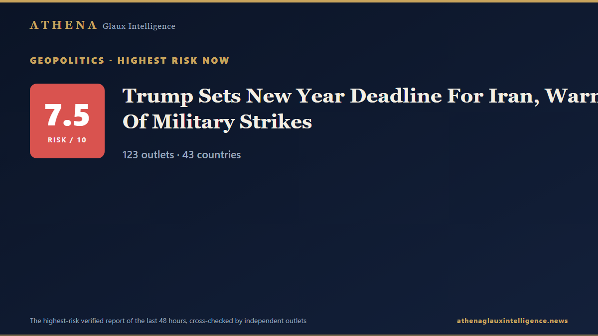
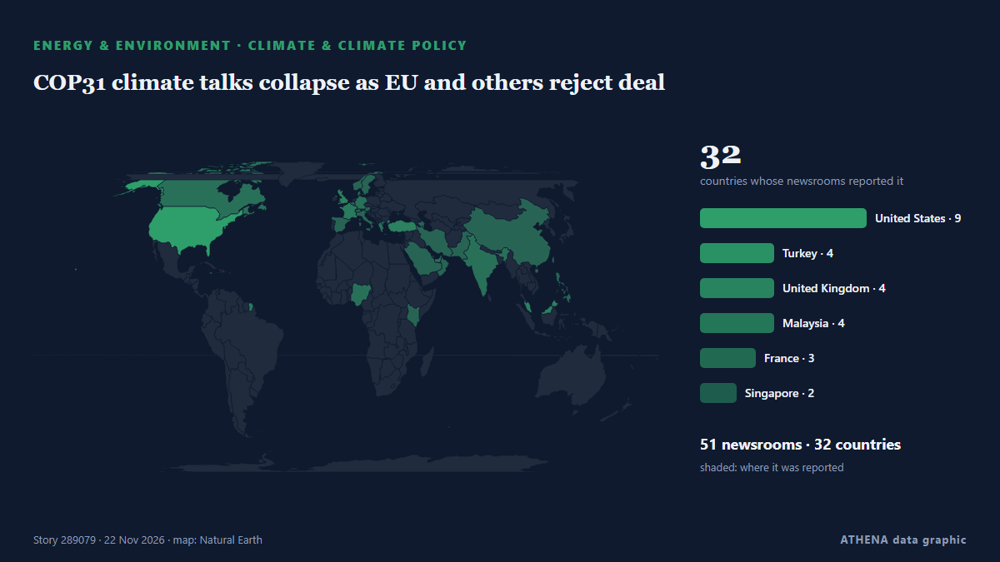

Risk 7.5Elevated
ATHENA Glaux Intelligence — Global news intelligence — every number explained
Geopolitics
All geopolitics >Highest risk now

Rising riskRisk up in the last 24 hours
Maritime & shipping
Maritime desk >Highest risk now
Risk 7.6Elevated
Endurance athlete swims in Strait of Hormuz to highlight Iran war's impact on wildlife
Read the evidence ›
Watch listChokepoints, ports and other shipping reports
- Strait of HormuzDisruptedattack / strike · risk 7.6 · 22 newsrooms (72 h)
- Danish Straits / BalticDisruptedattack / strike · risk 7.5 · 125 newsrooms (72 h)
- Bab el-Mandeb / Red SeaDisruptedattack / strike · risk 7.5 · 125 newsrooms (72 h)
Every headline, checked across countries.
ATHENA Glaux reads 633 news outlets worldwide. A story becomes a verified event only when independent outlets report it. Each event shows who was first and a risk score with its reasons.
1,268events in 24 hours
633outlets followed
35minutes between updates
Earthquake or flood near you this week?
Type your town and see the earthquakes, floods, storms and official warnings near it, with a 72-hour emergency kit checklist. Free, no sign-up, and your place stays on your device.
Reports drift in from independent outlets - when two meet on the same story, it becomes a verified event.
How ATHENA checks a story
- CollectReports arrive from independent outlets in many countries.
- MatchWhen two outlets meet on the same story, it becomes a verified event.
- ExplainEach event shows who was first, how far it spread and why the risk is what it is.

Energy & EnvironmentCOP31 climate talks collapse as EU and others reject deal
(1st UPDATE) The last time UN climate talks failed to get a deal adopted by all was in Copenhagen in 2009. from Rappler
7.8Importance
2.3Risk · moderate
90%Confidence
Energy & Environment
EU objects to Cop31 draft deal over failure to mention fossil fuels
Bangladeshi climate advocates welcome key proposals but warn that delivery will depend on public grants, clear timelines and firm obligations for developed countries. from The Business Standard (Bangladesh) (working feed)
Technology & Cyber
FBI reportedly investigating apparent hack of its criminal database
The National Crime Information Center database is used by federal and local law enforcement to share information. from BBC News
Sponsored
Cybernetics and Artificial Intelligence Lab Welcome to the Cybernetics and Artificial Intelligence Laboratory, established at the Department of Business Administration of the National and Kapodistrian University of Athens. The lab is headed by Professor Dimitrios Thomakos. The lab aims to do research that can be published in top venues. Our research uses tools and methods of Artificial Intelligence, and lies in the following areas: - Forecasting - Decision making - Cyber security - Finance We are always looking forward to collaborating with exceptional students!
Learn more – Cybernetics and Artificial Intelligence LabShips at the world's chokepoints now
Live AIS counts. Tap or hover a bar for the detail.
Latest reports
Retail sales volumes jump 2.2%, biggest rise since December 2021
US intelligence chief predicts more tech outages as systems undergo upgrades
Korea asks Qatar to prioritize LNG supplies once production, shipping normalize
Colombian Government Asks X to Suspend Former President Gustavo Petro’s Account
OpenAI chief scientist urges industry limits on AI development
Trump to welcome investors at gala for his plunging meme coin
In Istanbul, thousands protest closure of pro-opposition Turkish media outlets
Trump: Market down over $6T since Democrats won
Geopolitics
(LEAD) Seoul shares open over 2 pct lower amid AI fears
SEOUL, Nov. 23 (Yonhap) -- South Korean stocks opened more than 2 percent lower ... from Yonhap (English)
Technology & Cyber
Countries agree to work toward ‘killer robots’ pact
GENEVA, Nov 20 - UN talks on rules for autonomous weapons headed into overtime on Friday with some nations including Russia dragging their feet and negotiators considering a non-binding deal on arms… from The Straits Times
Energy & Environment
Fossil Fuels Missing In New COP31 Draft Deal, Tensions Remain Unresolved
Fossil fuels are a flashpoint at the climate talks and the summit comes against a difficult backdrop of soaring energy prices and geopolitical tensions stemming from the war in Iran. from NDTV World
Geopolitics, Politics & Security
More ›Wars & conflicts
Ukraine says Russian strikes kill 12 in Kyiv region
Russian strike kills one in collapsed block of flats near Kyiv. from Gulf News
- Diplomacy & summits
Netanyahu, Eisenkot parties end talks without deal on forming Israel govt
- Elections & politics
US Democrats clinch a historic House majority of at least 258 seats, the largest since 1992
- Elections & politics
With US midterms underway, courts rebuff Trump's pressure on state election officials
- Elections & politics
Trump on ’60 Minutes’ Reflects on Midterm Loss, Death and Forgiveness: ‘I Do Hate Some of My Enemies’
Economics, Finance & Markets
More ›Banking & credit
How ‘GTA VI’ surpassed all expectations
You can paint your bedroom walls. You can scuba dive and explore shipwrecks. from Bangkok Post
- Inflation & interest rates
Silver Price Forecast: XAG/USD holds opening gains as Fed bigger rate hike prospects wane
- Inflation & interest rates
Gold rebounds as traders pare bets on near-term Fed rate hikes
- Banking & credit
Israel investigates West Bank fires blamed on settlers
- Stocks, bonds & markets
NZX gains 1.3% for the week despite late NZX 50 fall – Market close
Sources: New Zealand Herald
Trade, Industry & Infrastructure
More ›Supply chains & logistics
Iran to start rolling power cuts Sunday
Shafaq News- Tehran Iran will begin scheduled power cuts on Sunday, November 22, because of difficulties supplying fuel to power plants, the head of national electricity company Tavanir told state… from Shafaq News (English)
- Aviation, rail & road
Delta system outage delays 1,300+ US flights
- Manufacturing
APL Apollo Tubes to acquire two Tata Steel businesses for Rs 28,000 crore
- Supply chains & logistics
Eimskip in Iceland orders its third Konecranes Gottwald ESP.8 Mobile Harbor Crane
- Construction & infrastructure
New scoring and more days for Malaysia Open
Energy, Resources & Environment
More ›Water & natural resources
Chow Kon Yeow rebuts Lim Guan Eng’s RM210m claim, says Penang won’t pay for undelivered water
GEORGE TOWN, Nov 22 — Penang is not required to make any payments to Perak before water supply under the Bulk Water Supp... from Malay Mail
- Climate & climate policy
COP31 fails to reach consensus on Antalya Pact
- Water & natural resources
Otters offer hope for Klang River's recovery
- Electricity & power
Around 50 settlements in Rivne Oblast left without power following Russian attack
- Climate & climate policy
Azerbaijan praises Türkiye's COP31 presidency, calls for continued global climate action
Technology, AI & Cybersecurity
More ›Chips & computing
US seeks answers on Nvidia’s sale of chips to China: Bessent
He said the chipmaker’s board of directors is working to determine what had happened. from The Business Times
- Artificial intelligence
Exclusive-Like SpaceX, Anthropic ran an unusual IPO process, chafing some bankers
- Media & disinformation
Landmine blast kills 5 children in northwest Syria: state media
- Space & satellites
2 probes enter orbit around Mercury on Japan-Europe joint mission
- Space & satellites
Honda to launch new hybrid Avancier SUV in Japan after debut in Thailand
Business, Companies & Investment
More ›Investment & capex
Red tape delaying foreign investment in Philippines, Danish envoy says
FOREIGN investors may delay or abandon Philippine projects because layered approvals and repeated documentation requirements raise costs and slow investment decisions, Danish Ambassador Franz-Michael… from BusinessWorld
- Corporate strategy
Wonder explores sale of delivery service Grubhub: report
- Startups & innovation
More than 2,300 Indian Sikh pilgrims arrive in Pakistan to mark Guru Nanak's birthday
- Corporate strategy
Turkey freezes assets of 108 people in fund scandal: report
- Mergers & acquisitions
Sanofi rumoured to be eyeing high-profile Insmed takeover
Accidents & emergencies
More ›Accidents & emergencies
HT Morning News Brief Nov 22: 9 of family killed in Rajasthan accident, Bangladesh tense over Sheikh Hasina’s proposed return and more
Catch the key developments making headlines across India and the world, along with the latest in sports and entertainment. from Hindustan Times
Three ways to read today
Start with the one that fits your timeVerified events
Ranked by how widely they are reported
- COP31 fails to agree on climate deal139 outlets · 62 countriesRisk 3.8
- Netanyahu and Eisenkot parties resume talks to form Israel government160 outlets · 56 countriesRisk 4.7
- Alice Huang in touch with Chinese spy agency during affair with Nvidia CEO, NYT says147 outlets · 48 countriesRisk 5.1
- Black Sea Security Crisis Costs Bulgaria Ship-Repair Orders and Jobs113 outlets · 46 countriesRisk 7.4
- Libya reports drone attack on Russian ship in Benghazi104 outlets · 42 countriesRisk 6.9
Assessment Desk
Ask a question and read a reasoned assessment of a leading story, with what would prove it wrong.
Open the Assessment Desk ›Today in numbers
| 05:00 | 291 |
|---|---|
| 06:00 | 413 |
| 07:00 | 290 |
| 08:00 | 388 |
| 09:00 | 493 |
| 10:00 | 823 |
| 11:00 | 440 |
| 12:00 | 308 |
| 13:00 | 474 |
| 14:00 | 20 |
| 15:00 | 340 |
| 16:00 | 0 |
| 17:00 | 5 |
| 18:00 | 1065 |
| 19:00 | 811 |
| 20:00 | 360 |
| 21:00 | 226 |
| 22:00 | 170 |
| 23:00 | 237 |
| 00:00 | 234 |
| 01:00 | 319 |
| 02:00 | 284 |
| 03:00 | 299 |
| 04:00 | 544 |
Risk of today's events
Geopolitics100Trade & Industry29Energy & Environment28Economy & Markets26Technology & Cyber20Business16Maritime3
Emerging signals
- Sudden surge · Active nowChris Bowen
- Sudden surge · Active nowBenghazi
- New name in the news · Active nowDymer
- Sudden surge · Active nowKhartoum
- Sudden surge · Active nowNetanyahu and Eisenkot
Official warnings
- M 6.5 - Vanuatu regionM6.5 · USGS ·
- M 5.9 - 238 km SW of Yanglong, ChinaM5.9 · PAGER yellow · USGS ·
- Orange notification for tropical cyclone AKVAN-26. Population affected by Category 1 (120 km/h) wind speeds or higher is 0 (20.826 million in Tropical Storm).Orange · GDACS ·
Stay informed
ATHENA Weekly Risk Picture
The week's biggest geopolitical, economic and shipping risks, cross-checked and scored.
Every Friday at 08:00 Athens time · free · in English
Subscribe freeATHENA on Telegram
News the moment it is published: breaking events at risk 6 or more, an hourly round-up, risk-tracker updates and the daily briefing at 10:00.
Free · posts in English · leave at any time
Join the channelSign-up is handled by beehiiv with double opt-in: nothing you type is sent to ATHENA, and every issue has an unsubscribe link.
Risk trackers
More ›Strait of HormuzRisk 7.611 new this week · down from 41 the week beforeRed Sea shippingRisk 6.330 new this week · down from 49 the week beforeGreece–Turkey relationsRisk 3.55 new this week · down from 11 the week beforeCyprusRisk 5.016 new this week · about the same as the week beforeSanctions on RussiaRisk 4.817 new this week · up from 11 the week beforeRussia–Ukraine warRisk 7.1239 new this week · down from 286 the week beforeIsrael, Gaza & the West BankRisk 6.873 new this week · down from 91 the week beforeTaiwan StraitRisk 1.510 new this week · down from 17 the week beforeOil & gas pricesRisk 3.930 new this week · down from 54 the week beforeSuez CanalRisk 0.03 new this week · up from 1 the week beforeTurkish StraitsRisk 0.00 new this week · down from 1 the week beforePanama CanalRisk 0.00 new this weekShadow fleetRisk 0.02 new this week · down from 3 the week beforeBlack Sea shippingRisk 7.63 new this week · down from 10 the week beforeCentral banks & interest ratesRisk 4.147 new this week · about the same as the week beforeGreek economyRisk 2.88 new this week · about the same as the week beforeEastern Mediterranean energyRisk 0.02 new this week · down from 7 the week beforeBalkansRisk 3.019 new this week · about the same as the week beforeMediterranean migrationRisk 0.02 new this week · down from 3 the week before
Global risk outlook — week 47, 2026 (16–22 Nov) ›
Around the world
Middle East & North AfricaTrump Sets New Year Deadline For Iran, Warns Of Military Strikes
55 events
Southeast AsiaVietnam Embassy celebrates Vietnamese Culture Day in Phnom Penh
52 events
North AmericaWaymo recalls robotaxis after they drove into closed freeway lanes
51 events
South AsiaIndonesia sweets factory fire leaves three workers dead and 37 missing
50 events
Sub-Saharan AfricaAlice Huang in touch with Chinese spy agency during affair with Nvidia CEO, NYT says
43 events
Russia & EurasiaZelensky says Crimean Bridge strikes ‘fair response’ as he meets UK’s Streeting
41 events
East Asia(LEAD) Seoul shares open over 2 pct lower amid AI fears
40 events
Latin America & CaribbeanCrime Costs Brazil US$74B as Lula Waits
24 events